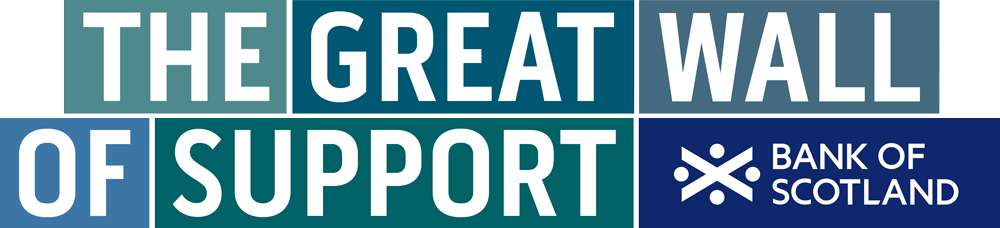
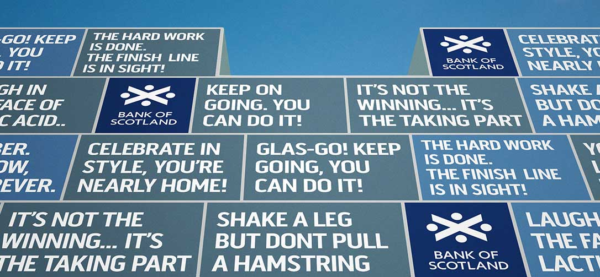
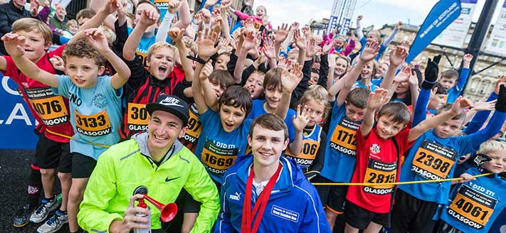

<!DOCTYPE html>
<html>
	<head>
		<meta charset="UTF-8">

		<link href="style.css" rel="stylesheet" type="text/css">
	</head>
	
	<body> 
		
		<div id="wrapper" class="auto-overflow">
			
			<div id="header">
				
			</div> <!-- END OF HEADER -->
			
			<div class="width-class1 float-l top-left-div">
				<h3>RKCR/Y&R presents the Bank of Scotland<br>Great Wall of Support</h3>
				<h4>THE BACKGROUND</h4>
				
				<p>	Bank of Scotland has been the sponsor of the Great Scottish Run – Scotland’s 						largest mass-participation sporting event – for the past 5 years. But in 2014, 						we wanted to create a step-change: to move beyond simply communicating our 							support of Great Scottish Runners via traditional media to actually helping and 					empowering participants.
				</p>	
			</div> <!-- END OF TOP-LEFT-DIV -->
			
			<div id='top-right-div' class="float-r width-class1">
				<h4>With just an 11 day campaign...</h4>
				
				<ul>
					<li>A total of 13,237 messages were sent to 5,987 people taking part in the 							race: the equivalent of one in four Great Scottish Runners.
					</li>
					
					<li>Our seven promoted social posts generated 16,343 interactions from the 							public.
					</li>
					
					<li>Our bespoke Great Wall of Support page received 23,609 unique views.
					</li>
					
					<li>We converted 56% of all unique page views into message submissions.
					</li>
				</ul>	
			</div> <!-- END OF TOP-RIGHT-DIV --> 
			
			<div id='video'>
				<iframe src="//player.vimeo.com/video/114656507?api=1&player_id=video-iframe" 							id="video-iframe" class="inline-video-tile width-class3" style="display: block;" 					webkitallowfullscreen mozallowfullscreen allowfullscreen marginheight="0" 							marginwidth="0" frameborder="0" wmode=”opaque”>
				</iframe>
			</div> <!-- END OF VIDEO -->
			
			<div id='left-mid-div' class="width-class1 float-l">
				<h4>USING TECHNOLOGY TO SUPPORT<br>AND INSPIRE</h4>
		
				<p>As we started creative development, we made two discoveries. The first was that 						the event organisers distributed RFID-enabled running chips to participants 						before the race, but that no-one had cracked how to get the most out of them.
				</p>
				<p>The second was a powerful insight: that towards the end of a race you hit a 							psychological wall that makes you want to give in, but that you can overcome it 					with the support of friends and loved ones. Our idea was bold and simple: to use 					this untapped technology to solve a very human need.
				</p>	
			</div>
			
			<div id="message-board-img" class="width-class1 float-r">
				
			</div>
			
			<div id="center-grey-div" class="grey auto-overflow width-class3">
				
				<div class="float-l grey-background-div width-class2 hidden-overflow">
						
				</div>
			
				<div class="float-r grey-background-div width-class2">
					<h4>THE GREAT WALL OF SUPPORT IS BORN</h4>
					<p>Two weeks before the run, we used seven sponsored posts on owned social 								channels and a Bauer radio partnership to encourage people to visit a new              						section of the Great Scottish Run website: The Bank of Scotland Great Wall 							of Support. Here, people could type a message and then enter a runner’s name 						or race number, so that the message could be automatically synced with their 						RFID running chip.
					</p>
				<p class="p2">
					On the day of the run, we built the Great Wall of Support: a Bank of Scotland-						branded 100m2 digital screen one kilometre from the finish line. As the runners 					crossed a sensory pad before the Wall, their personalised message appeared on 						the screen. 
				 </p>
				</div>	
			</div>
			
			<div id='bottom-left-div' class="width-class1 float-l">
				<h4>THE RESULTS</h4>
				<p>Despite a limited spend, our beautifully simple idea achieved some incredible 						results.	
				</p>
				<p>In the 11 days before the race, our social posts generated 16,343 interactions 						from the public, and even a mention from Haile Gebrselassie to his 119,000 							Twitter followers! The posts and radio partnership hugely exceeded their 							objective, with our Great Wall of Support webpage receiving 23,609 unique views 					over the same period. 56% of these unique page views resulted in message 							submissions; with a total of 13,237 messages sent to almost 6,000 runners 							(around one in four participants).	
				</p>	
			</div>
			
			<div id='bottom-right-div' class="width-class1 float-r">
				<h4>FROM SAYING TO SHOWING: A BANK SPONSORSHIP LIKE NO OTHER
				</h4>
				<p>
				The power of this Bank of Scotland campaign was its ability to solve a real human 					need through the use of smart, simple technology. By taking an insight-led 							approach, the brand was able to genuinely help Great Scottish Runners experience 					whole new levels of support. And the results speak for themselves: thousands of 					faces turning from agony to ecstasy as they saw messages from their friends and 					loved ones. 
				</p>
				<p class="p2">
					Not exactly what you would have expected from a bank sponsorship.
				</p>
			</div>
						
			<div id="footer" class="auto-overflow width-class3">
						
			</div> <!-- END OF FOOTER -->
		</div> <!-- END OF WRAPPER -->

	</body>
	
</html>


